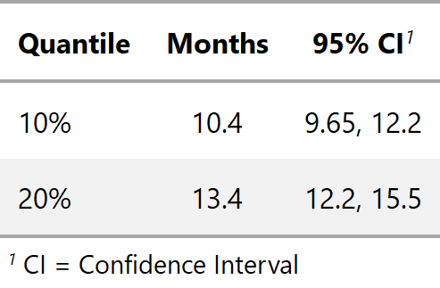

Creates table of survival probabilities
tbl_survival.survfit.RdFunction takes a survfit object as an argument, and provides a
formatted summary of the results
# S3 method for survfit tbl_survival(x, times = NULL, probs = NULL, label = ifelse(is.null(probs), "{time}", "{prob*100}%"), level_label = "{level}, N = {n}", header_label = NULL, header_estimate = NULL, failure = FALSE, missing = "-", estimate_fun = NULL, ...)
Arguments
| x | a survfit object with a single stratifying variable |
|---|---|
| times | numeric vector of survival times |
| probs | numeric vector of probabilities with values in (0,1) specifying the survival quantiles to return |
| label | string defining the label shown for the time or prob column.
Default is |
| level_label | used when survival results are stratified.
It is a string defining the label shown. The input uses
glue::glue notation to convert the string into a label.
The default is |
| header_label | string to be displayed as column header.
Default is |
| header_estimate | string to be displayed as column header of the Kaplan-Meier
estimate. Default is |
| failure | calculate failure probabilities rather than survival.
Default is |
| missing | character string indicating what to replace missing confidence
limits with in output. Default is |
| estimate_fun | function used to format the estimate and confidence limits.
The default is |
| ... | not used |
level_label argument
The level_label is used to modify the stratum labels. The default is
level_label = "{level}, N = {n}". The quantities in the curly
brackets evaluate to stratum-specific values. For example, in the trial
data set, there is a column called trt with levels 'Drug' and 'Placebo'.
In this example, {level} would evaluate to either 'Drug' or 'Placebo'
depending on the stratum. Other quantities available to print are:
{level}level of the stratification variable{n}number of observations, or number within stratum{n.event.tot}total number of events (total across stratum, if applicable){n.event.strata}total number of events within stratum, if applicable{strata}raw stratum specification fromsurvfitobject
Example Output
Example 1

Example 2

See also
Other tbl_survival tools: inline_text.tbl_survival
Examples
library(survival) fit1 <- survfit(Surv(ttdeath, death) ~ trt, trial) tbl_strata_ex1 <- tbl_survival(fit1, times = c(12, 24), label = "{time} Months" ) fit2 <- survfit(Surv(ttdeath, death) ~ 1, trial) tbl_nostrata_ex2 <- tbl_survival(fit2, probs = c(0.1, 0.2), header_estimate = md("**Months**") )